RAG 進階：做一個同事用網址就能問的問答工具
遠颺旅行社（虛構）的老闆又去北海道帶團了，客人在 LINE 上問「東京團可以帶行動電源嗎」「出發前三天取消要扣多少」。Day 9 做的專案知識庫在老闆的帳號裡，助理小安和其他同事打不開。這一課請 Claude Code 把 276 份文件做成一個網頁問答工具：同事用手機打開網址、輸入通關密語就能問，每個答案都附檔名和原文那一句，資料裡沒有就回答「資料裡沒有，請問老闆」。不會的，就問 Claude。
看不到影片？到 YouTube 觀看。每一段的一分鐘短片在 AI 實戰短片播放清單。
問答工具在背後替同事去問 Claude，用的是 Claude API，跟 Claude 的月費分開算：先在 Claude Console 儲值，用多少扣多少，最少 US$5，買了不能退。我們實測五題，平均一題約 US$0.001（兩次 Haiku 5.5 呼叫：改寫問題＋回答）。示範用的 Console 帳號沒有儲值，買點數的畫面停在付款前；實際問答用的是另一把已經有點數的金鑰。旅行社、航空公司、行程和規定全部是假的，真的規定請看各家官網。
A｜先畫藍圖
聊天版的專案綁在一個人的帳號上。要讓每個同事都能問，就要做成一個網頁，大家打開同一個網址；網頁在背後用 API 金鑰去問 Claude（Day 7 講過 API 和金鑰）。
- 打開電腦版 Claude，切到上方的 Code 分頁。
- 輸入框下面點資料夾那一格 → 開啟資料夾…，選放文件的那個資料夾。第一次會問「要信任此工作區嗎？」，按 信任工作區。
- 把輸入框右下角的模式改成 規劃（Day 8 教過：先寫計畫給你看，你說好才動手）。
- 把 API 金鑰存成資料夾裡的
.env檔案（一行ANTHROPIC_API_KEY=你的金鑰），再貼上下面這段需求。
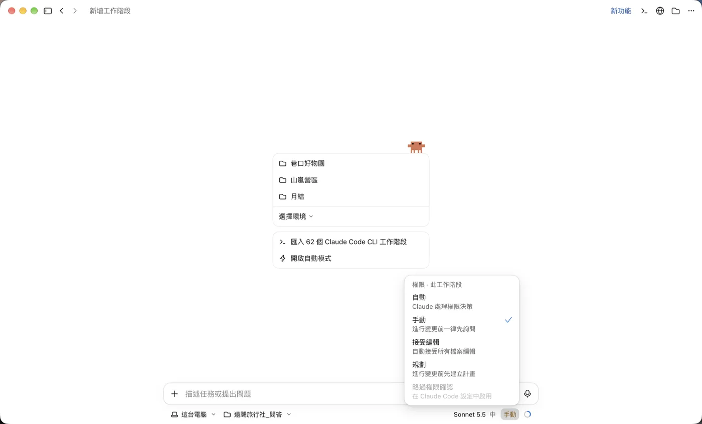
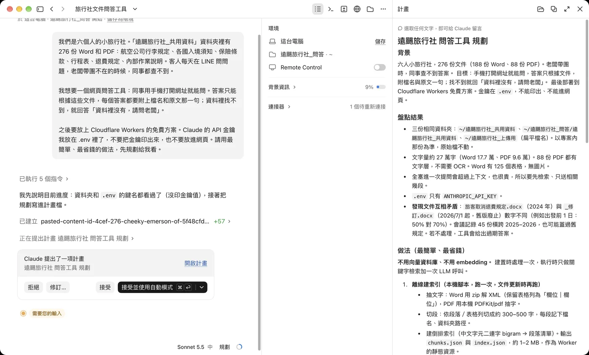
計畫最後它問了三件事，我們這樣回：
它的計畫就是 RAG（檢索增強生成）的三個步驟：
B｜拆成卡片、先找再答
它做完會自己出題測試（這次 28 題全過），也會檢查網頁和程式裡有沒有金鑰。先在自己電腦上試問，別急著上網。
我們試問「東京團可以帶行動電源嗎？」，它卻回「資料裡沒有」。原因是用詞對不上：同事說行動電源，文件寫的是「備用鋰電池」，照字找就找不到。它第一次的解法是同義詞表，但同事的說法補不完，所以再問：
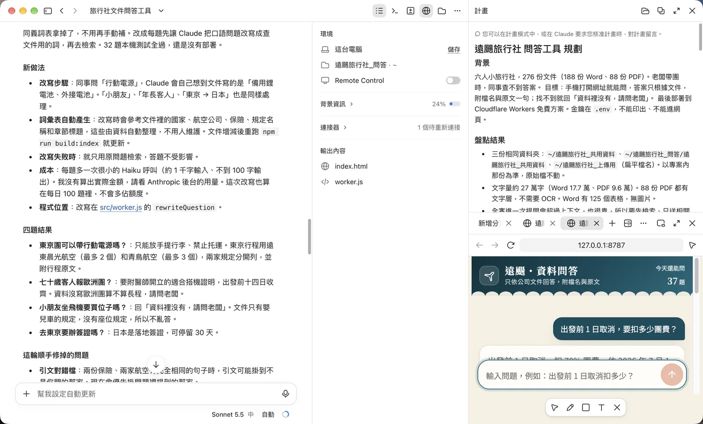
照字找（關鍵字）便宜但會漏；照意思找（向量搜尋，要另外開 Voyage AI 這類服務）比較準但要多一個服務。這一課用中間的做法：先改寫，再照字找，不用多開服務。資料裡真的沒有的（例如小朋友座位），它還是回「資料裡沒有」。
C｜答案附原文
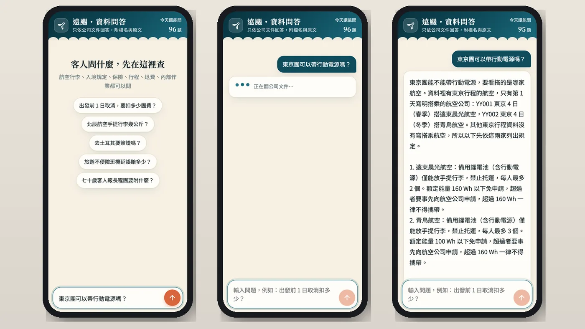
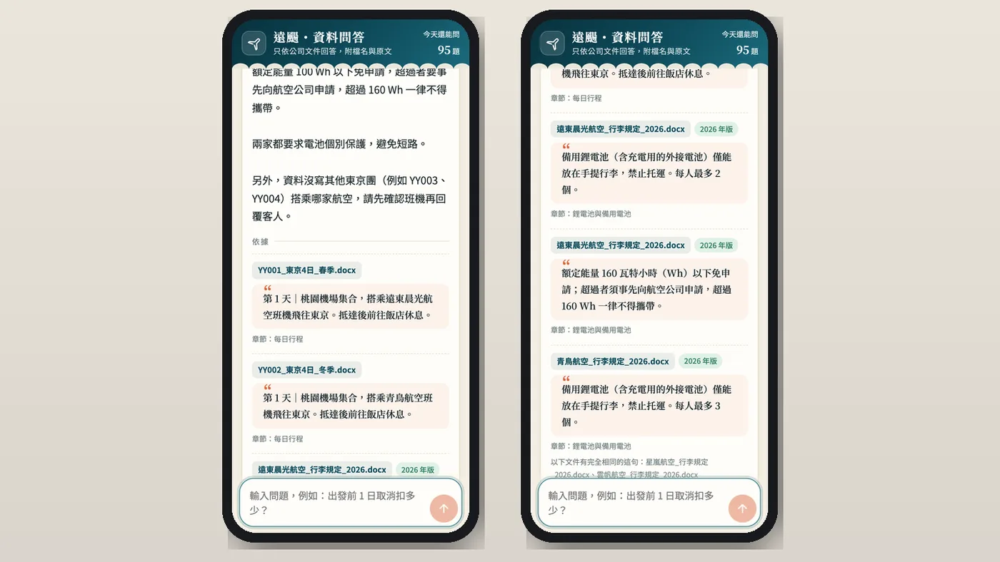
原文怎麼來：Claude 寫答案時要指出用了哪一段、抄出哪一句；程式再拿這一句回文件裡逐字比對，對不上就丟掉，沒有任何對得上的原文，就改回「資料裡沒有，請問老闆」。
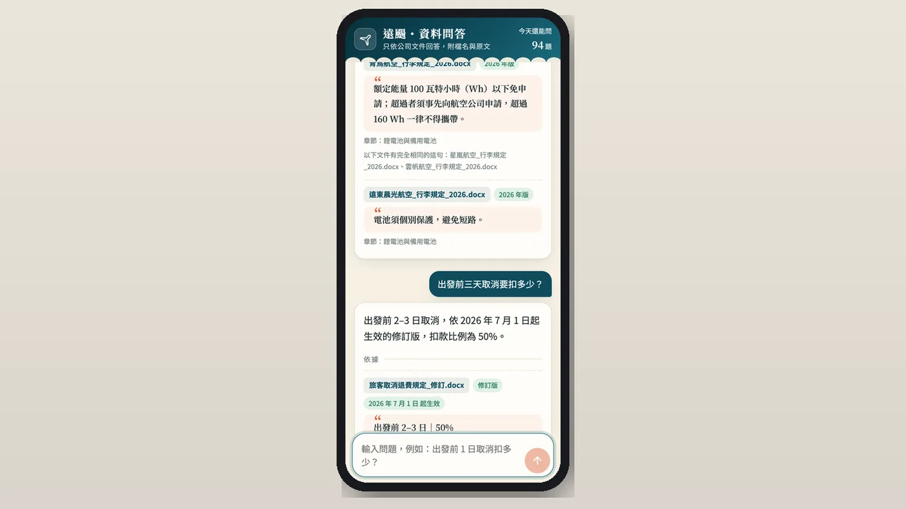
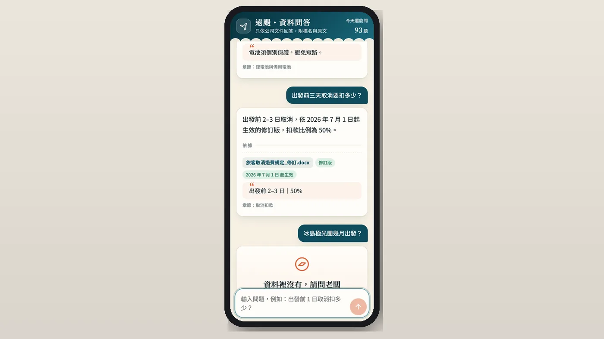
要留意：比較好幾家的答案，偶爾會把兩家的數字寫混（Claude Code 自己回報的限制）。原文是對的，所以同事要以下方附的原文為準。
D｜放上網、設上限
1. 申請 API 金鑰
- 到 Claude Console（開發者用的網站，用同一個 Claude 帳號登入）。第一次進去選 個人。
- 儲值頁：最少 US$5，可以用卡片、Apple Pay、Google Pay。自動儲值先不要開，點數用完就停，帳單不會失控。
- 左邊選 金鑰 → 右上角 建立金鑰。名字取認得出來的，範圍選一個這個工具專用的工作區（設定 → 工作區 → 建立工作區），之後帳單看得出這個工具花了多少。
- 金鑰只顯示這一次，馬上存好。沒有儲值的話，這把金鑰不能用。
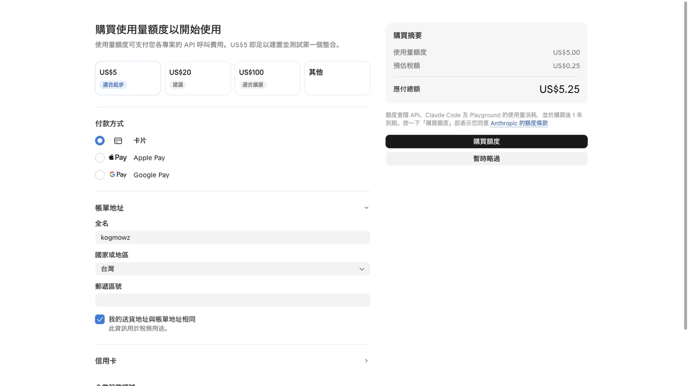
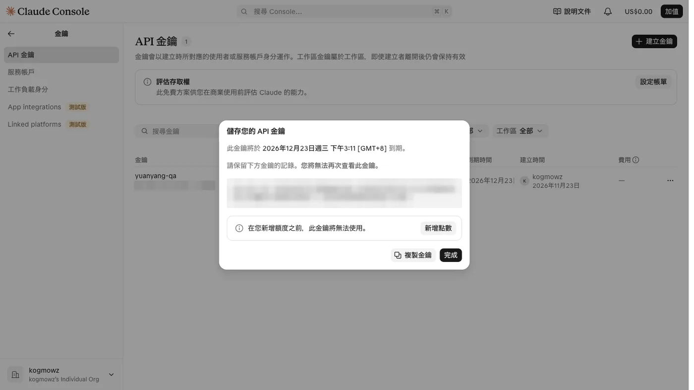
2. 金鑰放後台的 Secret，不放網頁
網頁的原始碼誰都看得到，金鑰放在網頁裡就像把信用卡貼在店門口。這個工具把網頁和「替網頁去問 Claude 的程式」都放在 Cloudflare Workers（Cloudflare 的後台，免費方案每天 10 萬次請求）；金鑰存在 Workers 的 Secret，存進去之後連你自己在後台都看不到內容。網頁上只有一格通關密語。
跟 Claude Code 說「開始部署」，第一次會跳出 Cloudflare 的授權頁，登入後按 Authorize。通關密語它不代設，要你自己在終端機輸入：
npx wrangler secret put APP_PASSPHRASE |
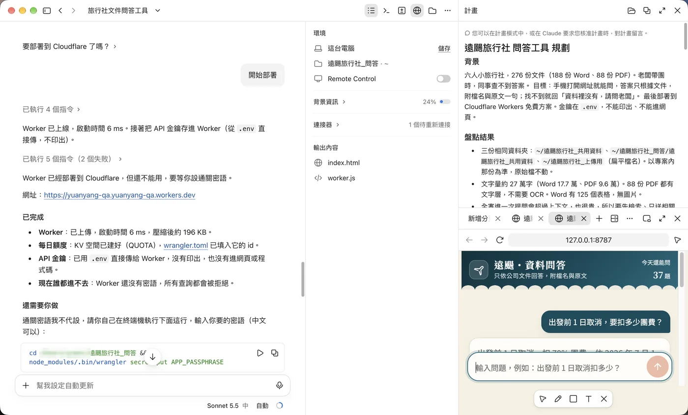
工具名稱.帳號.workers.dev。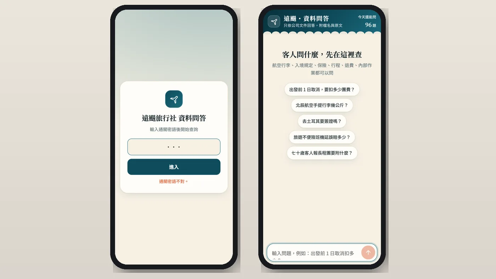
3. 文件更新了怎麼辦
新文件放進資料夾對應的子資料夾，在終端機跑一行，索引會重建、網站會再上線，大約一分鐘：
cd 你的資料夾 && npm run update |
改規定時：新版檔名加 _修訂，文件第一行寫「本規定自 某年某月某日 起實施，舊版同時廢止。」舊版會自動標成已廢止，答案會註明依哪一版。
這一課的示範網站拍完就關掉了，不會一直花錢。
今天的作業
先在自己的電腦做
拿十幾份工作上常查的文件，請 Claude Code 照這一課做一個只在自己電腦上用的版本。
問三題考它
一題資料裡有的、一題換個說法問的、一題資料裡沒有的，看它附的原文對不對。
要放上網再儲值
小額儲值、不開自動儲值，金鑰只放在 Secret。卡住了，就把畫面截圖問 Claude。
下一課：Day 13，視覺進階：一千張商品照，交給 Claude Code 和 OpenCV。
官方來源
- Claude 官方價目表（Haiku 5.5 每百萬 token 輸入 US$0.10、輸出 US$0.50）
- Claude Help Center：怎麼支付 API 費用（預付點數、一年到期、不退款）
- Claude Docs：速率限制與花費上限
- Cloudflare Docs：Workers 免費方案的限制
- Cloudflare Docs：Workers 的 Secret
- Anthropic：Contextual Retrieval（切塊前加說明，降低找錯的比例）
資料查證日期：2026 年 11 月 23 日。一題的費用是當天實測五題的平均。App 的畫面是用付費帳號、繁體中文介面實際操作的樣子；Console 的畫面是新開的帳號，沒有付款。價格和介面請以官方網站為準。